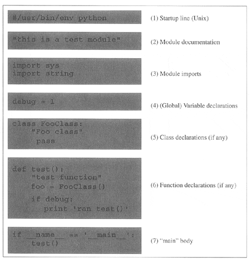

| < BACK | Make Note | Bookmark | CONTINUE > |
Basic Style Guidelines
Comments
You do not need to be reminded that comments are useful both to you and those who come after you. This is especially true for code that has been untouched by man (or woman) for a time (that means several months in software development time). Comments should not be absent, nor should there be novellas. Keep the comments explanatory, clear, short, and concise, but get them in there. In the end, it saves time and energy for everyone.
Documentation
Python also provides a mechanism whereby documentation strings can be retrieved dynamically through the __doc__ special variable. The first unassigned string in a module, class declaration, or function declaration can be accessed through by using obj.__doc__ where obj is the module, class, or function name.
Indentation
Since indentation plays a major role, you will have to decide on a spacing style that is easy to read as well as the least confusing. Common sense also plays a recurring role in choosing how many spaces or columns to indent.
| 1 or 2 | probably not enough; difficult to determine which block of code statements belong to |
| 8 to 10 | may be too many; code which has many embedded levels will wraparound, causing the source to be difficult to read |
Four (4) spaces is very popular, not to mention being the preferred choice of Python's creator. Five (5) and six (6) are not bad, but text editors usually do not use these settings, so they are not as commonly used. Three (3) and seven (7) are borderline cases.
As far as TABs go, bear in mind that different text editors have different concepts of what TABs are. It is advised not to use TABs if your code will live and run on different systems or be accessed with different text editors.
Choosing Identifier Names
The concept of good judgment also applies in choosing logical identifier names. Decide on short yet meaningful identifiers for variables. Although variable length is no longer an issue with programming languages of today, it is still a good idea to keep name sizes reasonable. The same applies for naming your modules (Python files).
Module Structure and Layout
Modules are simply physical ways of logically organizing all your Python code. Within each file, you should set up a consistent and easy-to-read structure. One such layout is the following:
# (1) startup line (Unix) # (2) module documentation # (3) module imports # (4) variable declarations # (5) class declarations # (6) function declarations # (7) "main" body
Figure 3-1 illustrates the internal structure of a typical module.
Figure 3-1. Typical Python File Structure
(1) Startup line
Generally used only in Unix environments, the start-up line allows for script execution by name only (invoking the interpreter is not required).
(2) Module documentation
Summary of a module's functionality and significant global variables; accessible externally as module.__doc__.
(3) Module imports
Import all the modules necessary for all the code in current module; modules are imported once (when this module is loaded); imports within functions are not invoked until those functions are called.
(4) Variable declarations
Declare (global) variables here which are used by multiple functions in this module (if not, make them local variables for improved memory/performance).
(5) Class declarations
Any classes should be declared here, along with any static member and method attributes; class is defined when this module is imported and the class statement executed. Documentation variable is class.__doc__.
(6) Function declarations
Functions which are declared here are accessible externally as module.function(); function is defined when this module is imported and the def statement executed. Documentation variable is function.__doc__.
(7) "main" body
All code at this level is executed, whether this module is imported or started as a script; generally does not include much functional code; rather, gives direction depending on mode of execution.
NOTE
The main body of code tends to contain lines such as the ones you see above which check the __name__ variable and takes appropriate action (see Core Note below). Code in the main body typically executes the class, function, and variable declarations, then checks __name__ to see whether it should invoke another function (often called main()) which performs the primary duties of this module. The main body usually does no more than that. (Our example above uses test() rather than main() to avoid confusion until you read this Core Note.)
Regardless of the name, we want to emphasize that this is a great place to put a test suite in your code. As we explain in Section 3.4.2, most Python modules are created for import use only, and calling such a module directly should invoke a regression test of the code in such a module.
Most projects tend to consist of a single application and importing any required modules. Thus it is important to bear in mind that most modules are created solely to be imported rather than to execute as scripts. We are more likely to create a Python library-style module whose sole purpose is to be imported by another module. After all, only one of the modules—the one which houses the main application—will be executed, either by a user from the command-line, by a batch or timed mechanism such as a Unix cron job, via a web server call, or be invoked from a GUI callback.
With that fact in hand, we should also remember that all modules have the ability to execute code. All Python statements in the highest level of code, that is, the lines that are not indented, will be executed on import, whether desired or not. Because of this "feature," safer code is written such that everything is in a function except for the code that should be executed on an import of a module. Again, usually only the main application module has the bulk of the executable code at its highest-level. All other imported modules will have very little on the outside, and everything in functions or classes. (See Core Note below for more information.)
NOTE
Because the "main" code is executed whether a module is imported or executed directly, we often need to know how this module was loaded to guide the execution path. An application may wish to import the module of another application, perhaps to access useful code which will otherwise have to be duplicated (not the OO thing to do). However, in this case, you only want access to this other application's code, not to necessarily run it. So the big question is, "Is there a way for Python to detect at runtime whether this module was imported or executed directly?" The answer is… (drum roll…) yes! The __name__ system variable is the ticket.
__name__ contains module name if imported
__name__ contains '__main__' if executed directly
Create Tests in the Main Body
For good programmers and engineers, providing a test suite or harness for our entire application is the goal. Python simplifies this task particularly well for modules created solely for import. For these modules, you know that they would never be executed directly. Wouldn't it be nice if they were invoked to run code that puts that module through the test grinder? Would this be difficult to set up? Not really.
The test software should run only when this file is executed directly, i.e., not when it is imported from another module, which is the usual case. Above and in the Core Note, we described how we can determine whether a module was imported or executed directly. We can take advantage of this mechanism by using the __name__ variable. If this module was called as a script, plug the test code right in there, perhaps as part of main() or test() (or whatever you decide to call your "second-level" piece of code) function, which is called only if this module is executed directly.
The "tester" application for our code should be kept current along with any new test criteria and results, and it should run as often as the code is updated. These steps will help improve the robustness of our code, not to mention validating and verifying any new features or updates.
| Last updated on 9/14/2001 Core Python Programming, © 2002 Prentice Hall PTR |
| < BACK | Make Note | Bookmark | CONTINUE > |